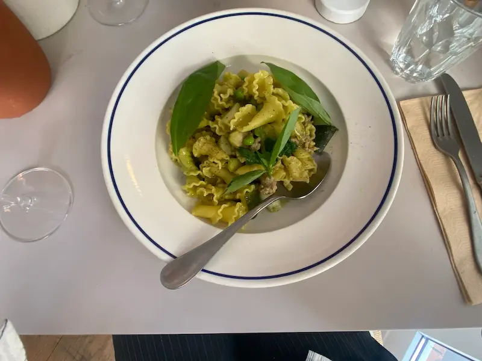
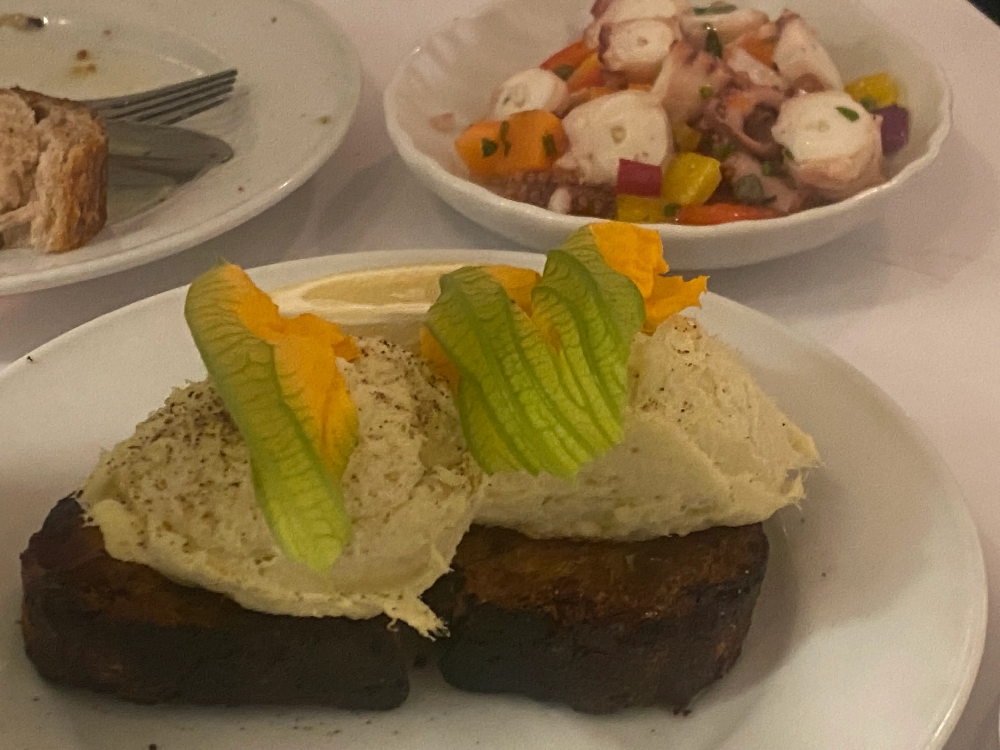
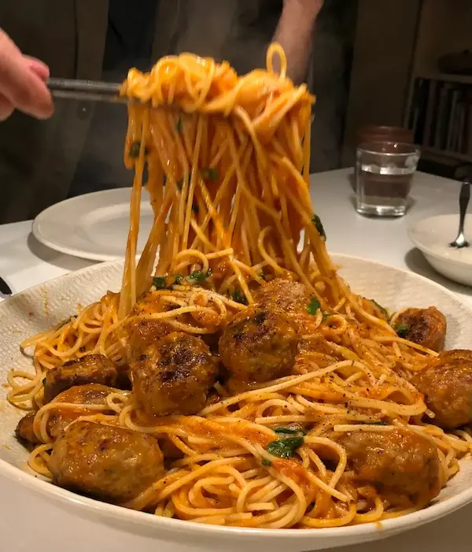
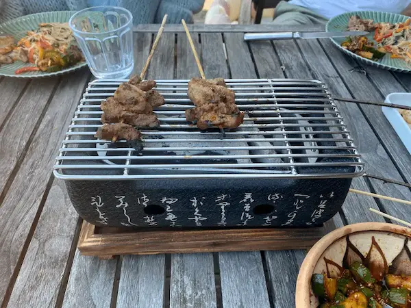
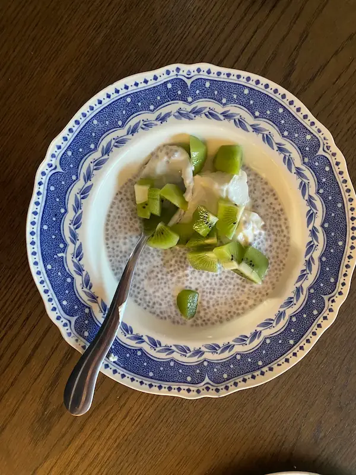
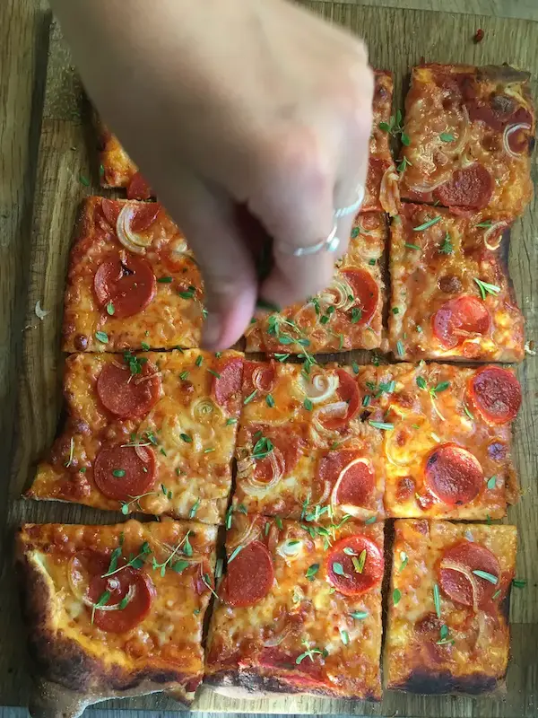
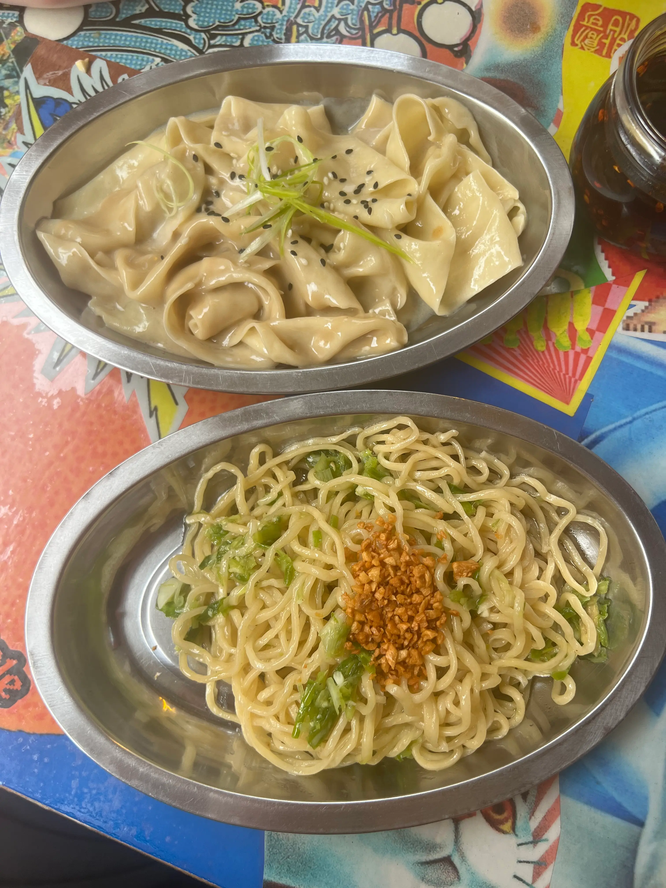
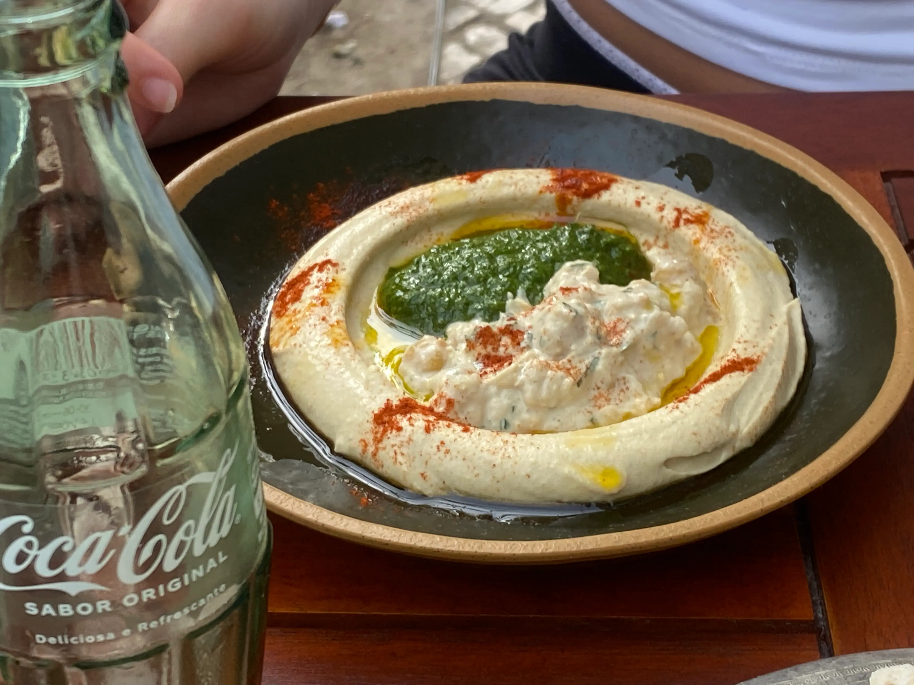

TASTEBOOK
Velkommen til en verden af opskrifter
- TASTEBOOK er et kreativt sted for dig, der elsker god mad og nye idéer. Find inspiration til din næste ret, gem de opskrifter, du ikke vil glemme, og skab dine egne favoritter. Du kan søge efter retter ud fra de ingredienser, du allerede har derhjemme, og samle alt det, du elsker, ét sted. Find, gem og skab din egen samling af gode retter.
- Prøv idag!
Nyeste tilføjet retter







